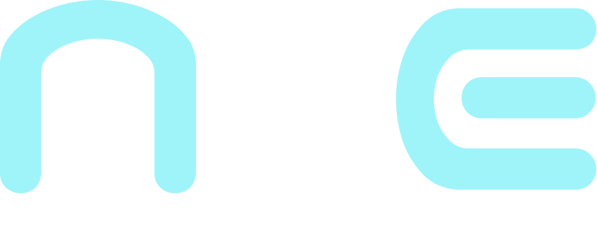

Confidencialidad
Garantiza que la información solo sea accesible para las personas y sistemas autorizados.

La ISO/IEC 27001 es el estándar internacional que establece los requisitos para un Sistema de Gestión de Seguridad de la Información (SGSI), permitiendo a las organizaciones proteger sus activos de información y gestionar riesgos de manera sistemática y basada en evidencia.
Garantiza que la información solo sea accesible para las personas y sistemas autorizados.
Asegura que los datos sean precisos, completos y no sufran modificaciones no autorizadas.
Logra que la información y los servicios estén accesibles para los usuarios autorizados siempre que los necesiten.
La norma no es un trámite: es una forma de trabajar que se revisa y mejora cada año.
Identifica qué puede salir mal con tu información y decide qué hacer antes de que ocurra.
Ofrece a clientes y socios una prueba independiente de que gestionas la seguridad en serio.
Define quién hace qué cuando algo falla, para responder rápido y aprender del problema.
No solo archivos en un servidor: la información existe de muchas formas.
Bases de datos, correos, documentos en la nube, código y copias de seguridad.
Contratos en papel, equipos, oficinas, archivos y soportes de almacenamiento.
El conocimiento del personal y lo que se comenta en reuniones o por teléfono.
Lo que mucha gente cree sobre la ISO/IEC 27001, y lo que realmente pasa.
Se aplica a cualquier organización que maneje información, sea cual sea su sector o tamaño.
La norma combina personas, procesos y tecnología. Las herramientas son solo una parte de los controles.
El certificado se mantiene con auditorías de seguimiento cada año y una recertificación al cumplirse el ciclo de tres años.
Reduce la probabilidad y el impacto de los incidentes, pero no elimina el riesgo por completo.